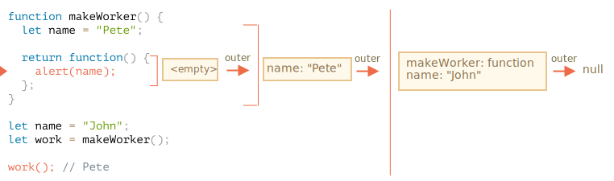

The answer is: Pete.
The work() function in the code below gets
name from the place of its origin through the outer lexical
environment reference:

So, the result is "Pete" here.
But if there were no let name in makeWorker(),
then the search would go outside and take the global variable as we can
see from the chain above. In that case the result would be
"John".